LRT LINE 1
LRT LINE 2
LRT 1 ROUTE MAP
Status
Onboarding
In Transit
Arriving
Under Maintenance
Emergency Stop
Current Station
Fernando Poe Jr.
Balintawak
Monumento
5th Avenue
R. Papa
Abad Santos
Blumentritt
Tayuman
Bambang
Doroteo Jose
Carriedo
Central Terminal
UN Avenue
Pedro Gil
Quirino
Vito Cruz
Gil Puyat
Libertad
EDSA
Baclaran
Redemptorist
MIA
PITX
Ninoy Aquino
Dr. Santos
Destination Station
Fernando Poe Jr.
Balintawak
Monumento
5th Avenue
R. Papa
Abad Santos
Blumentritt
Tayuman
Bambang
Doroteo Jose
Carriedo
Central Terminal
UN Avenue
Pedro Gil
Quirino
Vito Cruz
Gil Puyat
Libertad
EDSA
Baclaran
Redemptorist
MIA
PITX
Ninoy Aquino
Dr. Santos
Status Details
Est Time of Completion :
Station :
Train ID :
Details :